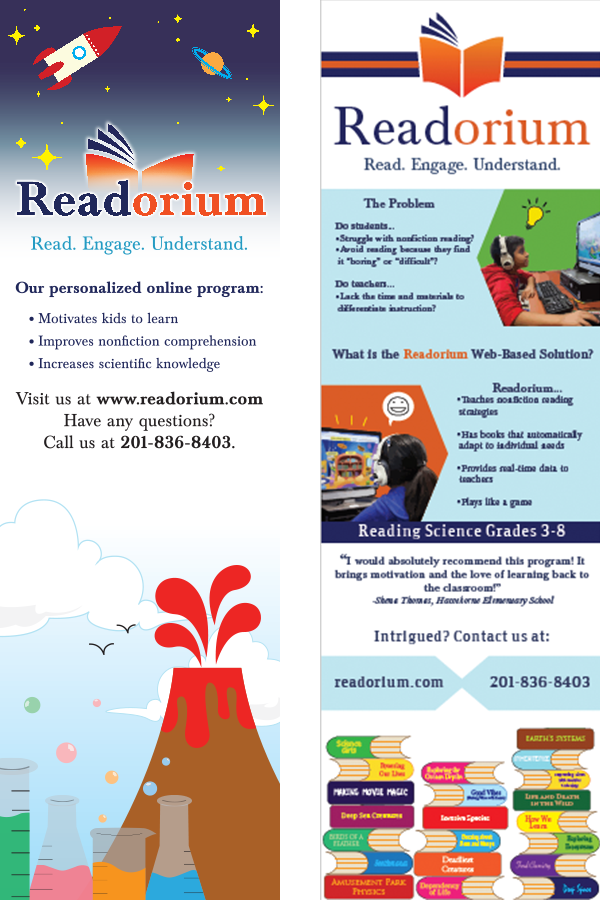
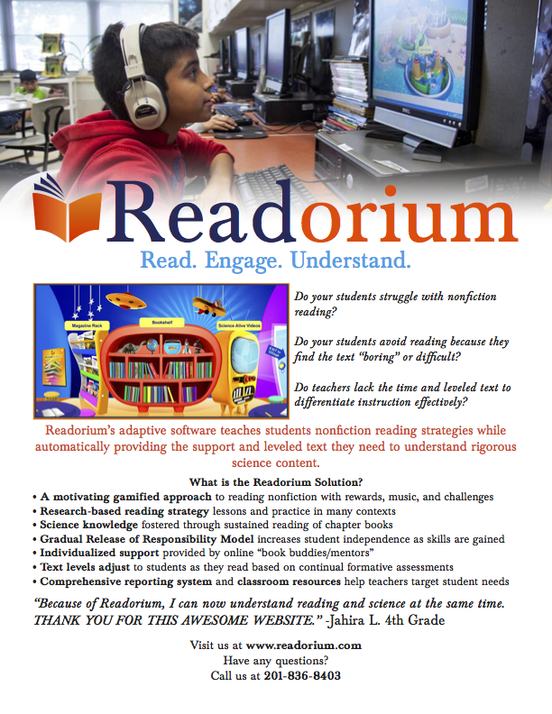
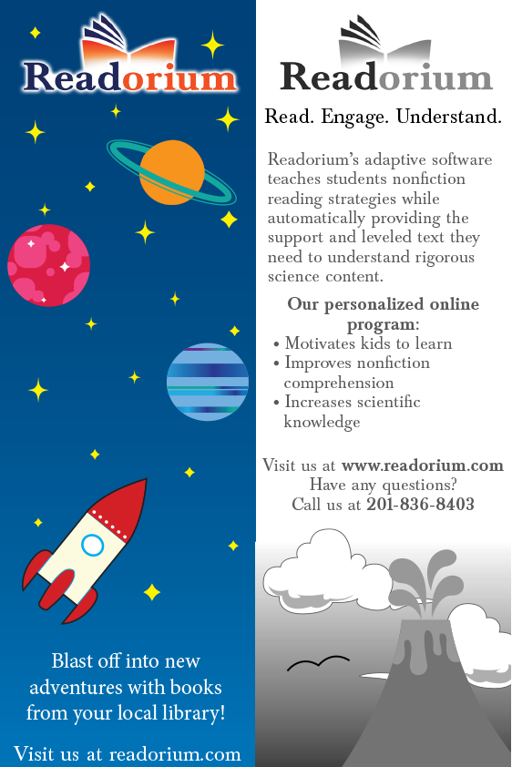
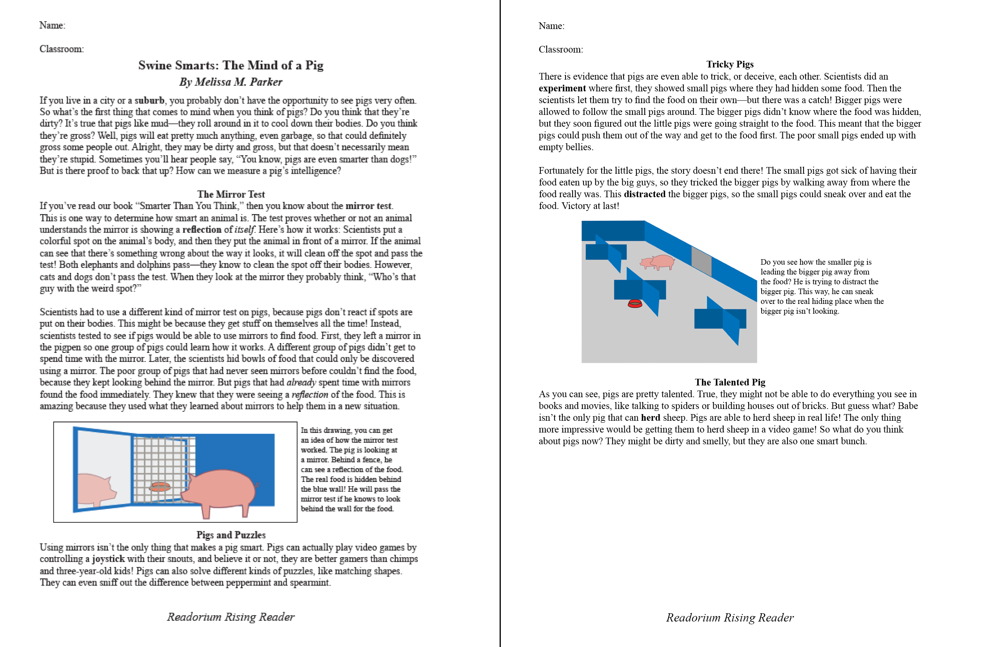

Readorium
Sept. 2015 - May 2016
Graphic design intern at local start-up.
Created in 2010, Readorium is a supplementary reading software system for grades 3 to 8. Readorium focuses on teaching reading strategies and word-learning skills needed to comprehend informational text to young students. As an intern, I designed promotional materials and came up with ideas to help advertise the company.
One of the main projects we worked one was creating two banners for the company to use at conventions. These banners 2' by 8' and required lots of communication. To begin, my coworker and I sketched out several ideas for the banners. We were tasked with designing one for a viewer further away and (after we completed the first) one for a viewer closer to their table. During the whole process it was really important to keep an open dialogue with our boss and make sure she liked what we were working on. After feedback from her, we moved on to making elements in Illustrator together and adding these elements to InDesign. After several days of critiques and reworks, we created banners that were aesthetically pleasing and also had the information the boss wanted. These banners can be seen below.

2' by 8' Banners, InDesign and Illustrator
One of the most difficult parts about this project was working with people who know nothing about graphic design and how printing works. From being asked to include low quality images to way too many fonts, at some points it was hard to see how we as designers were ever going to be able to make somethign we were happy with. In the end, it came down to just talking and explaining the problems some of our coworkes suggestions brought. If that dialogue hadn't existed, no one would be happy.
Looking back at these banners, I wish we had worked to create a more cohesive look. The banners looked like they were designed by two very different people and it would have been good to make them look like the belonged to the same brand.
Additionally, we created promotional materical from Readorium to use at events. Two pieces we worked on are below.

8.5"x11" Flyer

Front and back of bookmark designed to hand out at libraries
Another project I worked on was creating customizable worksheets for teachers. This job entailed creating InDesign documents with editable fields and illustrating some of the concepts. An example of this work can be seen below.

Customizable student worksheet